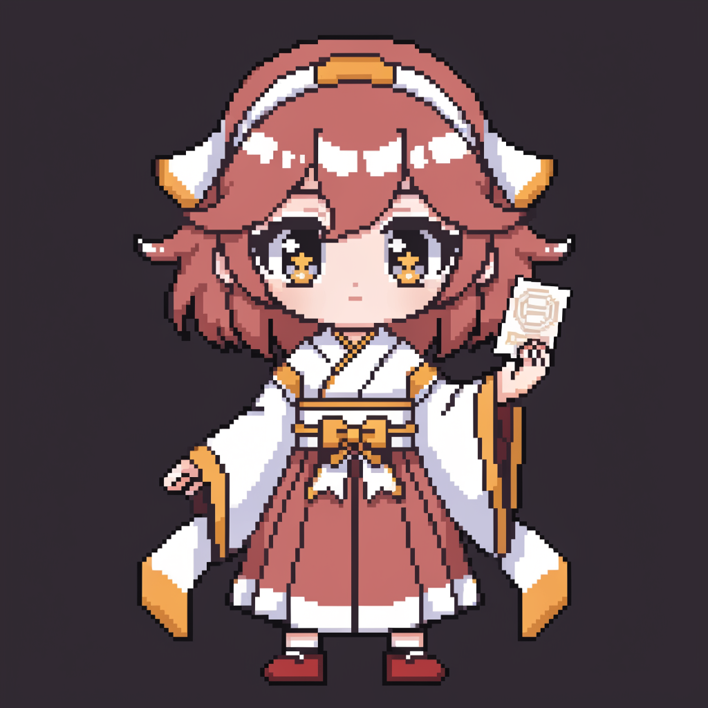
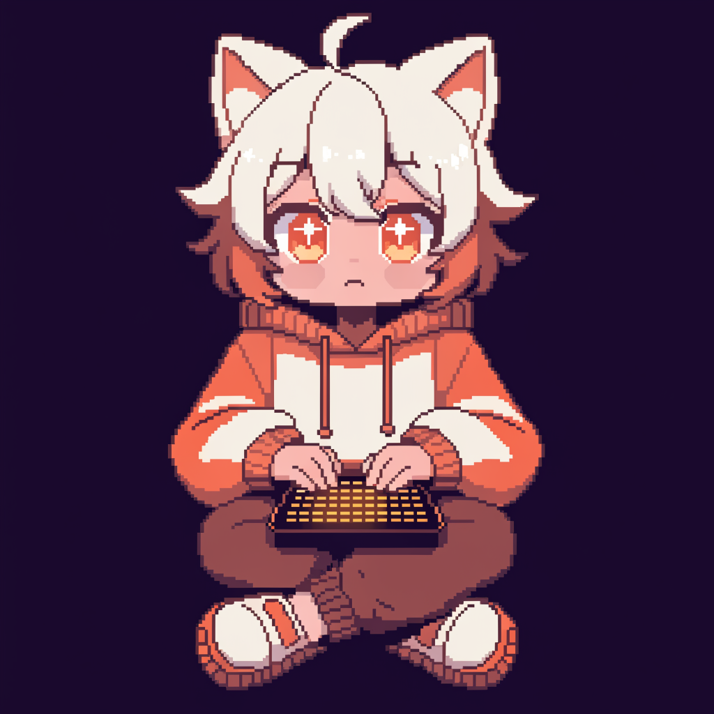
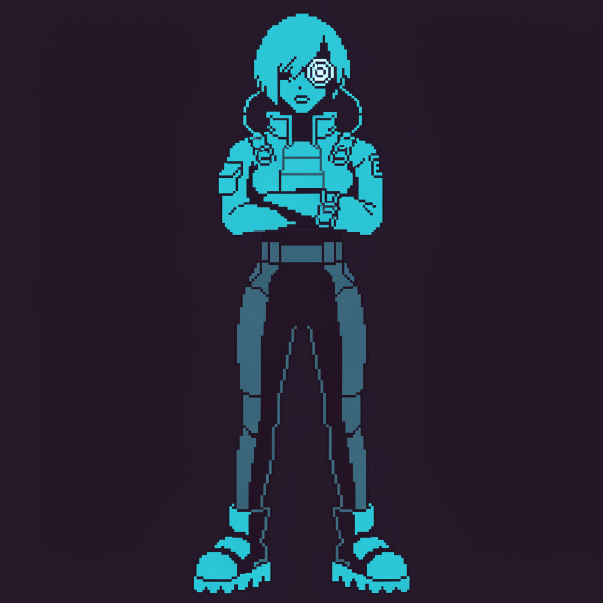
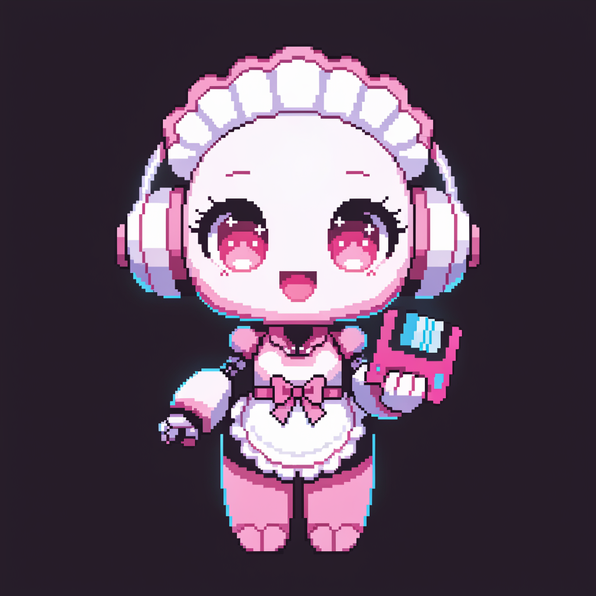
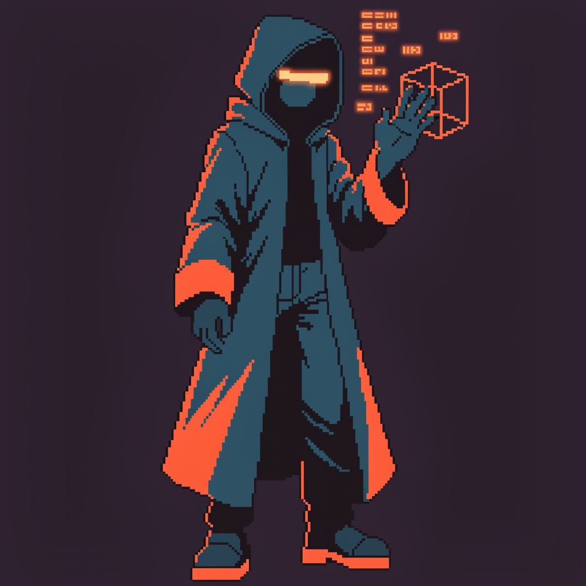

AI待ち時間の「今考えてる」フィードバック用ドット絵マスコット。Recraft V4.1 で 8-bit ピクセルスプライト生成 →
次段で SVG / CSS box-shadow に軽量圧縮してフレームアニメ化する前提。
見るべきは ①大サイズの造形・②小サイズ（20〜40px＝実際のスピナー寸法）で"何のキャラか読めるか"・③下の実使用プレビューの3点。

✳ Thinking
✳ Thinking
✳ Thinking

agent_panel の "✳ Thinking" 行に spinner として組み込み（＋ストリーミング平滑化・トークンのリアルタイム加算も同時に）